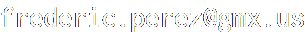

Networks
-
 LinkedIn profile
linkedin.com/in/fredericperez
LinkedIn profile
linkedin.com/in/fredericperez
-
 GitHub
github.com/frederic-perez
GitHub
github.com/frederic-perez
-
 Publications
researchgate.net/profile/Frederic_Perez
Publications
researchgate.net/profile/Frederic_Perez
-
 SlideShare
slideshare.net/frederic-perez
SlideShare
slideshare.net/frederic-perez
-
 Twitter
twitter.com/perez_frederic
Twitter
twitter.com/perez_frederic
-
 Bēhance portfolio
behance.net/frederic-perez
Bēhance portfolio
behance.net/frederic-perez
-
 Vimeo clips
vimeo.com/fredericperez
Vimeo clips
vimeo.com/fredericperez
About
I have a Doctorate degree in Software with European Doctor mention by the UPC (Technical University of Catalonia) obtained in May 2003--my advisors being Xavier Pueyo and Ignacio Martin. My research was focused on Computer Graphics, and more specifically on rendering images taking into account the interaction of light with the elements of the environment.
I am currently working on software components of the Made4U Concept, a platform aimed at producing bespoke glasses according to the morphology of the user, at Horizons Optical.
Contact
E-mail

Surface mail
Frederic Perez
Horizons Optical
C/ Alcalde Barnils, 72
E-08174 Sant Cugat del Vallès
Phone
+34 93 298 26 05